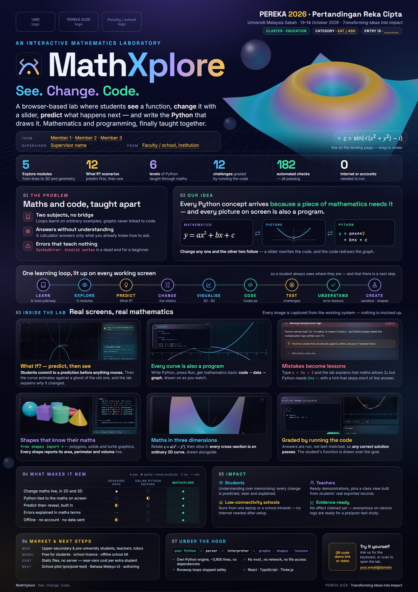

Everything that goes on the poster — the words, the pictures, the numbers and where each number comes from — so you can rebuild or adapt it in Canva, PowerPoint or Illustrator if you'd rather not use the ready-made file.
MathXplore_PEREKA2026_Poster_A0.pdf (print file)mathxplore_poster.html (editable source) · assets/ (all images)
| Item | Detail |
|---|---|
| Competition | Pertandingan Reka Cipta (PEREKA) 2026, part of the Borneo Festival of Ideas, Universiti Malaysia Sabah |
| Theme | Transforming Ideas Into Impact — echo it on the poster (the design does, in the header and footer) |
| Categories | Engineering & Technology (EAT) · Environmental & Applied Sciences (EAS) · Medicine & Life Sciences (MLS) · Arts, Social Sciences & Humanities (ASH) |
| Clusters | Include Education — MathXplore's natural cluster |
| Key dates | Briefing 18 Sep 2026 · Judging 13 Oct 2026 · Winners and awards 14 Oct 2026 |
| Venue | Kompleks Dewan Kuliah Pusat Ke-2, UMS |
In the ready-made poster each of these prints in amber with a dashed underline, so a missed one is easy to spot on a proof. In mathxplore_poster.html, search for class="fill".
| Placeholder | Where | What to put |
|---|---|---|
| Three logos | Top-left | UMS, PEREKA 2026 (or Borneo Festival of Ideas) and your faculty/school. Use the organiser's official files, PNG with transparency, at least 1000 px wide. |
| Category | Header chip | The category you registered under. For a software learning tool, EAT is usual; ASH suits it if you entered it as education research. |
| Entry ID | Header chip | The booth/entry number the secretariat assigns. Delete the chip if there isn't one. |
| Team members | Under the pitch | Full names as registered, e.g. Nur Aisyah binti Ahmad. Put the team leader first. |
| Supervisor | Under the pitch | With title, e.g. Dr. … / Prof. Madya … |
| From | Under the pitch | Faculty/school and institution, e.g. Faculty of …, Universiti Malaysia Sabah |
| QR code | Bottom-right | A link to a hosted copy of the app or a 60–90 s demo video (YouTube unlisted or Google Drive). Test it with two different phones before printing. |
| Bottom-right | The team contact address. |
| Size | A0 portrait, 841 × 1189 mm |
| Safe margin | Keep text at least 20 mm from every edge (poster v2: 32 mm at the sides, about 24 mm top and bottom) |
| Bleed | Ask the printer. Most roll-up and poster shops want 3–5 mm; the dark background can simply extend |
| Images | At least 150 dpi at printed size: a picture printed 25 cm wide needs ≥ 1480 px |
| Whole poster as pixels | 4967 × 7022 px at 150 dpi; 9933 × 14043 px at 300 dpi |
| File | PDF with fonts embedded (the supplied file already is) |
| Element | Size used | Minimum |
|---|---|---|
| Title | ≈ 190 pt | 120 pt |
| Tagline | ≈ 78 pt | 60 pt |
| Section headings | 36–48 pt | 36 pt |
| Pitch paragraph | 36 pt | 28 pt |
| Body and captions | 21–25 pt | 20 pt |
| Small print (legend, labels) | 18–20 pt | 16 pt |
| Ink (background) | #060818 |
| Paper (text) | #EEF2FC |
| Muted text | #A9B6D3 |
| Mathematics — violet | #B39CFF |
| Visualisation — cyan | #4CC9FF |
| Code — green | #3EE6A8 |
| Attention — amber | #FFC83D |
| Problems / errors — rose | #FF7A95 |
The colour rule matches the app: violet means mathematics, green means code, cyan means pictures and amber means "look here". Keep it consistent and visitors learn it without a legend.
| Headings, numbers | Space Grotesk 600–700 |
| Body | Inter 400 / 600 |
| Code | JetBrains Mono 400 |
| Equations | STIX Two Text italic (Cambria Math also works) |
In Canva, all four are available except STIX; use Cambria or Times New Roman italic for equations.
One reading path: who we are → what it is → why it's needed → how it works → proof it works → why it's new → who benefits → how it grows. A judge who reads only the top third should still know what MathXplore is.
| # | Band | Height (mm) | Contents |
|---|---|---|---|
| 1 | Header | 40 | 3 logos · event name, date, theme · cluster, category, entry ID |
| 2 | Hero | 225 | Kicker · MathXplore + logo · See. Change. Code. · pitch · team · live 3D surface |
| 3 | Numbers | 53 | Six headline figures |
| 4 | 01 Problem · 02 Idea | 150 | Three pain points · the core idea with the maths ⇄ picture ⇄ Python diagram |
| 5 | Learning loop | 75 | Nine stages, each tagged with the feature that delivers it |
| 6 | 03 Inside the lab | 305 | Six real screenshots with captions |
| 7 | 04 New · 05 Impact | 123 | Comparison table · four impact groups |
| 8 | 06 Market · 07 Tech · Contact | 94 | Business model and next steps · engine and safety · QR and email |
| Typical criterion | Answered by |
|---|---|
| Novelty / inventiveness | 02 Idea, the learning loop, 04 comparison table, 07 own Python engine |
| Usefulness / practicality | 03 six working screens, "0 internet or accounts", runs from one laptop |
| Impact (the 2026 theme) | 05 Impact: students, teachers, low-connectivity schools, evidence |
| Commercialisation | 06 Market & next steps: who pays, model, near-zero running cost |
| Presentation | Clear hierarchy, readable from 2 m, live demo at the booth |
These are the usual headings at Malaysian innovation competitions. Replace them with the official PEREKA 2026 rubric once you have it, and make sure each criterion has a visible answer on the poster.
Green boxes are the wording used on the finished poster; blue boxes are shorter alternatives if space is tight.
PEREKA 2026 · Pertandingan Reka Cipta
Universiti Malaysia Sabah · 13–14 October 2026 · Transforming Ideas Into Impact
CLUSTER · EDUCATION | CATEGORY · [EAT / ASH] | ENTRY ID · [____]
Kicker (small capitals, cyan)
AN INTERACTIVE MATHEMATICS LABORATORY
Title (logo + name; "Xplore" in the cyan → violet → amber gradient)
MathXplore
Tagline (three colours: cyan / violet / green)
See. Change. Code.
Pitch
A browser-based lab where students see a function, change it with a slider, predict what happens next — and write the Python that draws it. Mathematics and programming, finally taught together.
Team block
TEAM [names] · SUPERVISOR [name] · FROM [faculty, institution]
See a function. Change it with a slider. Predict what happens. Then write the Python that draws it.
| Number | Label | Source (see section 06) |
|---|---|---|
| 5 | Explore modules — from lines to 3D and geometry | Linear, Quadratic, Trigonometry, 3D Surfaces, Geometry |
| 12 | What If? scenarios — predict first, then see | src/content/whatif.ts |
| 6 | levels of Python taught through maths | src/content/lessons.ts |
| 12 | challenges graded by running the code | src/content/challenges.ts |
| 182 | automated checks — all passing | npm test: 119 + 38 + 24 + 1 |
| 0 | internet or accounts needed to run | No runtime network use; no login |
Maths and code, taught apart
SyntaxError: invalid syntax is a dead end for a beginner.Needs the internet. Many learning tools depend on accounts, downloads and a fast connection.
Every Python concept arrives because a piece of mathematics needs it — and every picture on screen is also a program.
Diagram of three boxes joined by ⇄ arrows:
MATHEMATICS y = ax² + bx + c ⇄
PICTURE (a parabola with its previous position dashed) ⇄
PYTHON y = a*x**2 + b*x + c
Change any one and the other two follow — a slider rewrites the code, and the code redraws the graph.
One learning loop, lit up on every working screen — so a student always sees where they are, and that there is a next step.
Nine stages, each with a small tag underneath: LEARN 6-level pathway → EXPLORE 5 modules → PREDICT What If? → CHANGE live sliders → VISUALISE 2D · 3D → CODE CodeLab → TEST challenges → UNDERSTAND error lessons → CREATE sandbox · shapes
Heading: Real screens, real mathematics · side note: Every image is captured from the working system — nothing is mocked up. Each card is a screenshot on top with a coloured title and a two- or three-line caption below it.
| Card title | Caption (write this) | Screenshot |
|---|---|---|
| What If? — predict, then see | Students commit to a prediction before anything moves. Then the curve animates against a ghost of the old one, and the lab explains why it changed. | Quadratic module, What If? answered and revealed (a from 1 to −1). whatif_card.jpg |
| Every curve is also a program | Write Python, press Run, get mathematics back: code → data → graph, drawn on as you watch. | CodeLab "Two curves at once": editor inset over the graph. code_editor.jpg + code_graph.jpg |
| Mistakes become lessons | Type y = 2x + 3 and the lab explains that maths allows 2x but Python needs 2*x — with a hint that stops short of the answer. | CodeLab after running y = 2x + 3. error_panel.jpg (or error.jpg with the editor) |
| Shapes that know their maths | from shapes import * — polygons, solids and turtle graphics. Every shape reports its area, perimeter and volume live. | Geometry Lab, "Solids" preset. solids.jpg (alternative: flower.jpg) |
| Maths in three dimensions | Rotate z = a(x² − y²), then slice it: every cross-section is an ordinary 2D curve, drawn alongside. | 3D Surfaces, "Saddle". saddle_tight.jpg |
| Graded by running the code | Answers are run, not text-matched, so any correct solution passes. The student's function is drawn over the goal. | Challenges, "Hit the target points", solved. challenge_card.jpg |
Beside it, live analysis updates as a slider moves: vertex, roots, axis of symmetry and discriminant — plus the same curve written as Python, one click from CodeLab.
Evidence, not claims. A timestamped record of predictions, attempts, error types and solutions viewed — exportable as CSV/JSON, tied to a random participant code, never leaving the device. Screenshot: Progress page (progress.jpg).
| Graphing apps | Online Python editors | MathXplore | |
|---|---|---|---|
| Change maths live, in 2D and 3D | ● yes | ○ no | ● yes |
| Python tied to the maths on screen | ◐ partly† | ◐ partly | ● yes |
| Predict-then-reveal, built in | ◐ partly* | ○ no | ● yes |
| Errors explained in maths terms | — n/a | ○ no | ● yes |
| Offline · no account · no data sent | ◐ some | ○ no | ● yes |
† GeoGebra's Python app (PyGgb, geogebra.org/python) builds GeoGebra constructions from Python code — the closest existing idea; see the comparison PDF. * Teacher-built activities on some graphing platforms ask students to predict. The column headings name categories, not products, which avoids arguments about any single competitor. At the booth you can name Desmos and GeoGebra (graphing) and typical browser Python editors as examples.
MathXplore brings together, in one offline browser tool, live 2D/3D mathematics, Python code tied to the same mathematics, predict-then-reveal questions, maths-aware error lessons and grading by execution.
SDG 4 · Quality Education — target 4.4, ICT skills; the UN indicator 4.4.1 counts "writing a computer program using a specialised programming language" as one of those skills.
Who — Upper-secondary & pre-university students, teachers, tutors
Model — Free for students · school licence · offline school kit
Cost — Static files, no server — near-zero cost per extra student
Next — School pilot (pre/post-test) · Bahasa Melayu UI · authoring
The school licence would cover the roadmap features (class rosters, activity authoring, reports), which are designed but not built. Say so if asked. If you have a MyIPO copyright filing, add "IP: copyright, MyIPO [no.]" here.
your Python → parser → interpreter → graphs · shapes · lessons
eval, no network, no file accessTry it yourself — Ask us for the keyboard, or scan to open the lab. [QR] [email]
Footer line: MathXplore · See. Change. Code. … PEREKA 2026 · Transforming Ideas Into Impact
| English (poster) | Bahasa Melayu | English (poster) | Bahasa Melayu |
|---|---|---|---|
| The problem | Pernyataan masalah | What makes it new | Kebaharuan / Keunikan |
| Our idea | Idea / Penyelesaian | Impact | Impak |
| Objectives | Objektif | Market & next steps | Potensi pengkomersialan |
| Inside the lab | Ciri-ciri utama | Under the hood | Teknologi |
| Learning loop | Kitaran pembelajaran | Try it yourself | Cuba sendiri |
Not on the poster itself, but often requested for the abstract book, the registration form or a small panel beside the poster.
MathXplore is a browser-based interactive mathematics laboratory that teaches mathematics and Python programming together. Students see a function, change it with sliders, predict the outcome before it is revealed, and write the Python code that draws it. The platform provides five exploration modules (linear, quadratic and trigonometric functions, 3D surfaces and geometry), twelve predict-then-reveal "What If?" scenarios, a six-level Python × Mathematics pathway and twelve challenges graded by executing the student's code. A purpose-built Python engine, written in TypeScript, turns programming errors into plain-language lessons linked to mathematical notation, and runs safely inside the browser with no internet connection, installation or account. Built-in anonymous learning records prepare the platform for classroom evaluation through pre- and post-testing.
MathXplore ialah makmal matematik interaktif berasaskan pelayar web yang mengajar matematik dan pengaturcaraan Python secara bersepadu. Pelajar melihat sesuatu fungsi, mengubahnya menggunakan peluncur, meramal hasilnya sebelum didedahkan, dan menulis kod Python yang melukisnya. Platform ini menyediakan lima modul penerokaan (fungsi linear, kuadratik dan trigonometri, permukaan 3D serta geometri), dua belas senario ramal-dan-lihat "What If?", laluan Python × Matematik enam tahap dan dua belas cabaran yang dinilai dengan melaksanakan kod pelajar. Enjin Python yang dibina khas dalam TypeScript menukar ralat pengaturcaraan kepada pelajaran dalam bahasa mudah yang dikaitkan dengan tatatanda matematik, dan berjalan dengan selamat dalam pelayar tanpa sambungan internet, pemasangan atau akaun. Rekod pembelajaran tanpa nama yang terbina dalam menyediakan platform ini untuk penilaian bilik darjah melalui ujian pra dan pasca.
Every image on the finished poster is already in poster/assets/, captured at 3× resolution from a fresh build. Use this recipe to recapture any of them, for example after changing the app.
npm run build then npm run preview, and open the address it prints in Chrome.| Picture | Route and state | Supplied file |
|---|---|---|
| Hero surface | Landing page (#/), third screen — the live surface. Transparent version made by hiding page backgrounds. | surface_alpha.png (also hero_surface.jpg with background) |
| What If? | #/explore/quadratic → choose "It flips to open downward…" → Lock in and see what happens | whatif_card.jpg, whatif.jpg (whole module) |
| Code → graph | #/codelab → "Two curves at once" → Run | code_editor.jpg, code_graph.jpg, mathmap.jpg |
| Error lesson | #/codelab → type x = 4 / y = 2x + 3 / print(y) → Run | error_panel.jpg, error.jpg |
| Geometry | #/explore/geometry → "Solids" (or "Flower" for turtle) | solids.jpg, flower.jpg, solids_alpha.png |
| 3D surface | #/explore/surfaces → "Saddle" | saddle_tight.jpg, saddle.jpg |
| Challenge | #/challenges → "Hit the target points" → set a = 1, b = -2, c = 3 → Run & check | challenge_card.jpg, challenge.jpg |
| Progress | #/progress after a few activities | progress.jpg |
| Whole app | #/explore/quadratic, full window — for a laptop mock-up if you want one | quadratic_app.jpg, landing_top.jpg |
src/components/layout/AppShell.tsx, Logo). The poster HTML contains it as SVG, so you can copy it into Illustrator or Inkscape.Every number on the poster was checked against the source code and a fresh test run on 24 September 2026. If the app changes before the event, re-check these.
| Claim | Evidence | How to re-check |
|---|---|---|
| 5 Explore modules | Linear, Quadratic, Trigonometry, 3D Surfaces, Geometry | src/pages/explore/ |
| 12 What If? scenarios | 12 scenario ids (linear 3, quadratic 4, trig 3, surfaces 2) | src/content/whatif.ts — the README still says 11; the code has 12 |
| 6-level pathway | Variables, Operations, Conditions, Loops, Functions, Visualisation | src/content/lessons.ts |
| 12 challenges | 3 Maths→Code, 4 Code→Graph, 5 Predict-the-output | src/content/challenges.ts |
| 182 automated checks, all passing | Engine 119 · graders 38 · pages 24 · mount 1 | npm test |
| ~3,900-line Python engine, no dependencies | 3,899 lines across tokenizer, parser, interpreter, geometry, hints | src/lib/pyengine/ |
| 14 geometry presets | Circle … Orbit | src/content/geometry.ts |
| No internet or account needed | No runtime network requests; no login anywhere | README "Running it" |
| Nothing leaves the device | Records are stored in the browser; export is manual | src/state/progress.tsx |
| Safe by construction | No eval; only registered builtins; 2,000,000-step budget; output and shape caps | README "Safety model" |
"Mathematics and programming are hard partly because they're taught apart. MathXplore puts them in one lab. [point at the loop] A student sees a function, changes it with a slider, predicts what will happen before we show them, and then writes the Python that draws it. [hand over the laptop] Try it — what happens to this parabola if a goes from 1 to −1? … Now the same curve as code. If I make a typical beginner's mistake — 2x instead of 2*x — the lab doesn't just say 'syntax error'; it explains the maths reason. It runs completely offline, needs no account, and is checked by 182 automated tests. Next, we want to pilot it in a school with a pre- and post-test — the logging for that is already built in."
y = 2x + 3 for the error lesson.| How is this different from Desmos or GeoGebra? | They're excellent for seeing maths. MathXplore adds Python tied to the same maths, predict-then-reveal, errors explained in maths terms and grading by running code — all offline. |
| Why write your own Python engine instead of Pyodide? | Three reasons: Pyodide needs a multi-megabyte download and the network; its raw errors teach nothing, while owning the parser means owning the message; and safety is structural — student code can reach only what we register. |
| Does it actually improve learning? | Not measured yet, and we don't claim it. The event log, CSV/JSON export and anonymous participant codes are built for a pre/post-test pilot. |
| What about student data? | Nothing leaves the browser. No accounts; a random participant code with no personal data; export only when the student chooses. |
| How would it make money? | Free for students; school licences for the educator features; offline deployment kits and teacher training. Hosting is static files, so each extra student costs almost nothing. |
| What are the limitations? | A deliberate Python subset (no classes or dictionaries); a simple mastery model; rosters and authoring still on the roadmap; 3D needs WebGL (2D always works). |
| How do you know it works? | 182 automated checks: Python behaviour against CPython, every grader against its reference solution, every page rendering, and a full app mount with no errors. |
poster/mathxplore_poster.html in a text editor (VS Code, Notepad++).class="fill" and replace each placeholder's text.<div class="logo-slot">…</div> with <div class="logo-slot"><img src="assets/ums.png"></div>; for the QR, do the same inside qr-slot.npm run preview) — don't rely on venue wifidist/ on a USB stick, plus a second browserdist/index.html shows an empty dark page — browsers block module scripts on file://. Always serve it: npm run preview, or python -m http.server inside dist/.